B. GEBODSTEKENS
Opmerking
Deze tekens kunnen worden aangevuld of verduidelijkt met bijkomende tekens, vermeld onder F
B.1 | a | Verplichting te varen in de richting aangegeven door de pijl (artikel 6.12) | 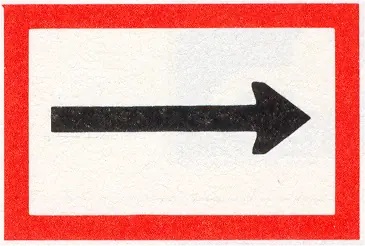 |
B.1 | b | idem | 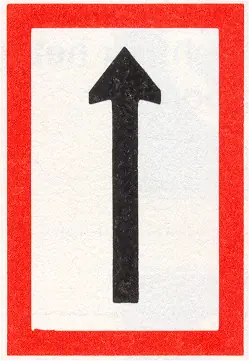 |
B.2 | a | Verplichting zich naar de bakboordszijde van het vaarwater te begeven (artikel 6.12) | 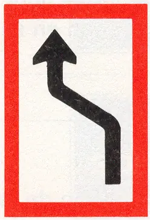 |
B.2 | b | Verplichting zich naar de stuurboordszijde van het vaarwater te begeven (artikel 6.12) | 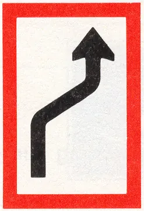 |
B.3 | a | Verplichting de bakboordszijde van het vaarwater te houden (artikel 6.12) | 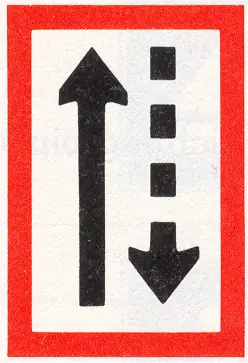 |
B.3 | b | Verplichting de stuurboordszijde van het vaarwater te houden (artikel 6.12) | 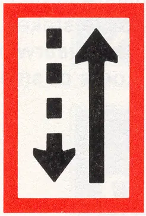 |
B.4 | a | Verplichting het vaarwater over te steken naar bakboord (artikel 6.12) | 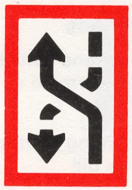 |
B.4 | b | Verplichting het vaarwater over te steken naar stuurboord (artikel 6.12) | 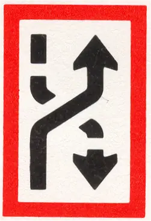 |
B.5 | Verplichting vóór het bord stil te houden onder bepaalde omstandigheden (artikelen 6.26, lid 3, onder b, en 6.28, lid 1) | 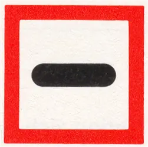 | |
B.6 | Verplichting de vaarsnelheid te beperken, zoals is aangegeven (in km/u) | 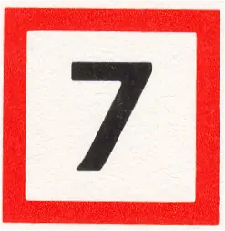 | |
B.7 | Verplichting een geluidssein te geven | 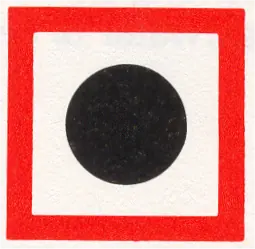 | |
B.8 | Verplichting bijzonder op te letten | 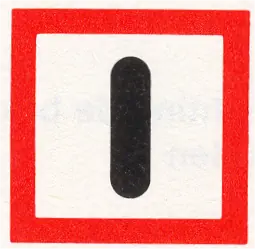 | |
B.9 | a | Verplichting niet het hoofdvaarwater op te varen of over te steken, indien daardoor schepen op het hoofdvaarwater zouden worden genoodzaakt hun koers of snelheid te wijzigen (artikel 6.16, lid 8) | 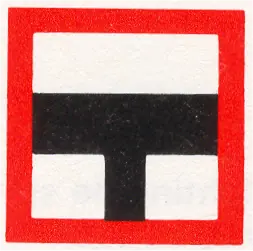 |
B.9 | b | idem | 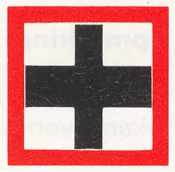 |
B.10 | Verplichting zonodig koers en snelheid te wijzigen ten behoeve van uitvarende schepen (geen verwijzing) | 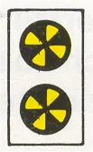 | |
B.11 | a | Verplichting gebruik te maken van marifoon overeenkomstig de daartoe bij algemene regeling vastgestelde voorschriften, dan wel zich te melden op het aangegeven marifoonkanaal | 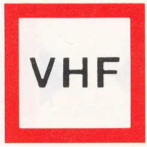 |
b | Verplichting gebruik te maken van marifoon overeenkomstig de daartoe bij algemene regeling vastgestelde voorschriften, dan wel zich te melden op het aangegeven marifoonkanaal | 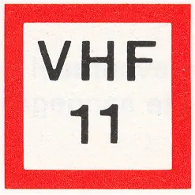 | |
B.12 | Verplichting tot het gebruik van walstroomaansluitingen (artikel 7.06a, eerste lid) | 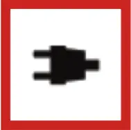 |